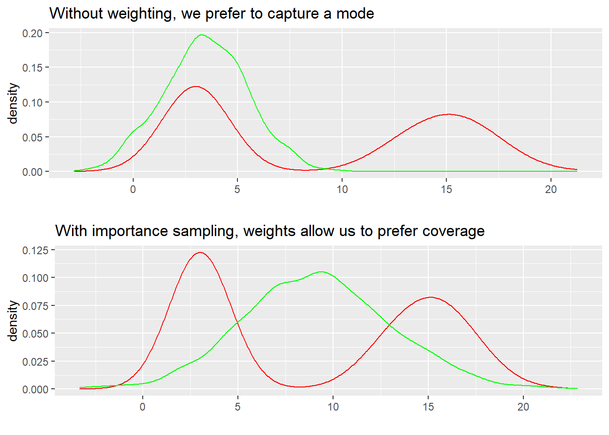

This is section 4 in my series on using Variational Inference to speed up relatively complex Bayesian models like Multilevel Regression and Poststratification without the approximation being of disastrously poor quality.
The general structure for this post and the one before and after it will be to describe a problem with VI, and then describe how that problem can be fixed to some degree. Collectively, all the small improvements in these three posts will go a long way towards more robust variational inference. I’ll also have a grab bag at the end of other interesting ideas from the literature I think are cool, but maybe not as important or interesting to me as the 3 below.
In the last post we took a look at how our ELBO objective requires specific version of KL Divergence (the “Exclusive” formulation of KLD), and saw that it encoded a preference for a certain type of solution to the VI problem. Then we looked at CUBO and CHIVI, an alternative bound and algorithm that avoid this problem, often leading to a more useful posterior distribution by pursuing a more “inclusive” solution.
In this post, we’ll leverage importance sampling to make the most of the samples we do have, emphasizing the parts of our q(x) that look like p(x) and de-emphasizing the parts that do not.
The rough plan for the series is as follows:
- Introducing the Problem- Why is VI useful, why VI can produce spherical cows
- How far does iteration on classic VI algorithms like mean-field and full-rank get us?
- Problem 1: KL-D prefers exclusive solutions; are there alternatives?
- (This post) Problem 2: Not all VI samples are of equal utility; can we weight them cleverly?
- Problem 3: How can we know when VI is wrong? Are there useful error bounds?
- Better grounded diagnostics and workflow
- Seeing if some more sophisticated techniques like normalizing flows add much
Not all samples are equally good
So we’ve made an approximation q(x) that’s cheap to sample from, and is somewhat close to p(x), our true posterior. The way to improve the approximation we’ve focused on so far is to just go back to the start and make q(x) better; for example, through changing up the variational family, or to switching to a different optimization objective like the CUBO. That’s one solution that’s often necessary, but can we work with a particular q(x) we have and make better use of the parts of it that are the closest to being right?
… Phased this way, this sounds a lot like importance sampling. If you haven’t seen them before, an importance sampling estimator allows us to take draws from a (preferably) easy to sample from distribution1 and reweight the samples to look more like our true target distribution. The weight w_i (or ratio, r_i) for each sample i take form:
w_i = \frac{p(x_i)}{q(x_i)} Before you get worried that we don’t have p(x_i) because of the normalizing constant like every time we talk about having p(x) in this series, there’s a clever estimator that “self-normalizes” such that this can be a reasonable strategy. Intuitively, we’re just placing more weight on samples likely p(x).
This footenote2 has a selection of some of my favorite resources for learning more or refreshing your memory about importance sampling, but for the main discussion let me pull out some particularly important sub-problems to solve in making a good importance sampling estimator, and good important sampling estimator for VI.
First, our choice of the “proposal” distribution we’re reweighting to be more like p(x) matters for making this process practically feasible. We need the proposal distribution to be close enough to p(x) that a realistic number of the draws get non-negligible weights. It might be true that we could draw proposals from a big N dimensional uniform distribution for every problem, but if we want to be done sampling enough this century we need to at least get fairly close with our initial q(x).
A second, but related problem is that it’s quite common for the unmodified importance sampling estimator to have some weights which are orders and orders of magnitude higher than the average weight, blowing up the variance of the estimator. Dan Simpson’s slides I linked above has an instructive example with not too weird p(x) and q(x)’s that has a max weight ~1.4 million (!) times the average. If that happens, our estimator will essentially ignore most samples without gigantic weights, and it’ll take ages for that estimator to tell us anything remotely reliable.
So with those points we need to address, here are the next topics in this post:
- Importance Weighted Variational Inference
- Robust importance sampling with built in diagnostics via Pareto-Smoothed Importance Sampling
- Combining multiple proposal distributions via Multiple Importance Sampling
Importance Weighted Variational Inference
Importance Weighting for VI in it’s simplest form is pretty intuitive (draw samples from an already trained q(x), weight them…), but let’s derive the new Importance Weighted Variational Inference (IWVI) estimator first since some nice intuition will come with it.
I want to emphasize something that wasn’t clear to me for a good while- these two ideas are not equivalent. While both are useful tools, the “train time”, objective-modifying IWVI estimator is a distinct approach from the “test time” importance sampling approach that takes draws from q(x) as already fixed and reweights them as best it can.
We’ll aim to show that we can get a tighter ELBO by using importance sampling. This type of tighter ELBO was first shown by Burda et Al. (2015) in the context of Variational Autoencoders after which is was fairly clear this could apply to variational inference, but Domke and Sheldon (2018) fleshed out some details of that extension- I’ll be explaining some of the latter group’s main results first.
To start, imagine a random variable R, such that \mathbb{E}{R} = p(x), which we’ll think of as a estimator of p(x). Then by Jensen’s Inequality:
logp(x) = \mathbb{E}logR + \mathbb{E}log\frac{p(x)}{R}
The first term is the bound, which will be tighter if R is highly concentrated.
This is a more general form of the ELBO; we can make it quite familiar looking by having our R above be:
R = \frac{p(z,x)}{q(z)}, z \sim q
The reason for pointing out this fairly simple generalization is helpful is that it frames how to tighten our ELBO on logp(x) via alternative estimators R.
By drawing M samples and averaging them as in importance sampling, we get:
R_M = \frac{1}{M}\sum_{m=1}^{M}\frac{p(z_m,x)}{q(z_m)}, z_m \sim q From there, we can derive a tighter bound on logp(x), referred to as the IW-ELBO:
IW-ELBO_M[q(z)||p(z,x)] := \mathbb{E}_{q(z_{1:M})}log\frac{1}{M} \sum_{m=1}^{M}\frac{p(z_m,x)}{q(z_m)} Where we’re using the 1:M as a shorthand for q(z_{1:M}) = q(z_1)...q(z_M).
It’s worth noting that the last few lines don’t specify a particular form of importance sampling- we’re getting the tighter theoretical bounding behavior from the averaging of samples from q. We’ll see a particularly good form of importance sampling with desirable practical properties in a moment.
How does IW-ELBO change the VI problem conceptually?
The tighter bound is nice, but importance sampling also has the side effect (done right, side benefit) of modifying our incentives in choosing a variational family. To see what I mean, we can re-use the example distributions from last post we used to build intuition for KL Divergence, where red was the true distribution, and green were our potential approximations. If we’re not going to draw multiple samples and weight them, it makes sense to choose something like the first plot below. Every draw in the middle of the two target modes is expensive per our ELBO objective, so better to choose a mode.
rkl_plot <- mixture %>% ggplot(aes(x = normals)) +
geom_density(aes(x = normals), color = "red") +
geom_density(aes(x = mode_seeking_kl), color = "green") + ggtitle("Without weighting, we prefer to capture a mode") +
xlab("")
fkl_plot <- mixture %>% ggplot(aes(x = normals)) +
geom_density(aes(x = normals), color = "red") +
geom_density(aes(x = mean_seeking_kl), color = "green") + ggtitle("With importance sampling, weights allow us to prefer coverage") +
xlab("")
grid.arrange(rkl_plot,fkl_plot)
If we can use importance sampling though, quite the opposite is be true! Note that we’re still using the ELBO, a reverse-KL based metric- that hasn’t changed. What has changed is our ability to mitigate the objective costs of those samples between the two extremes. Via this “train time” implementation of IS, points outside the two target modes will get lower importance weights, and points within the modes will get higher ones, so as long as we’re covering the modes with some reasonable amount of probability mass, and drawing enough samples we can actually do better with the distribution centered between the modes.
To further drive home the point about how a “train time” and “test time” implementations of IS differ, could “test time” IS do this? Not really- because the ability to better minimize the ELBO via sampling requires the IW-ELBO variant and associated training process. If we hard-coded q(x) as the green N(9,4) shown above, “test time” IS could weight the right samples up to better approximate p(x), but it doesn’t fundamentally alter our optimization problem the way the IWVI estimand does.
We can also imagine how varying the number of samples might effect optimization. Between M=1 and “enough draws to get all the benefits of IS”, we can imagine there’s a slow transition from “just stick with 1 mode” and “go with IS”. So it seems like we should be worried about getting the number of samples right, but fortunately as we’ll see in the next section there are great rules of thumb in some variants of IS. We’ll still need to bear the cost of sampling (which gets higher as q(x) becomes “further” from p(x), as we’ll need more samples to weight into a good approximation), but the cost of sampling for most VI implementations will often be pretty manageable if our proposal distribution is somewhat close to p(x).
Another way to think about how importance sampling changes our task with variational inference is to think about what sorts of distributions make sense to have as our variational family, and even which objective might be better given IS. On choice of a variational family, if we’re aiming for coverage, moving towards thicker-tailed distributions like t distributions makes a lot of sense. While we explored the IW-ELBO above to build intuition, there’s no reason not to apply VI to the CUBO and thus CHIVI- this also naturally produces nicely overdispersed distributions which can be importance sampled closer to the true p(x). This idea of aiming for a wide proposal to sample from is referred to in the importance sampling literature (eg Owen, 2013) as “defensive sampling”, with Domke and Sheldon (2018) exploring the VI connection more fully. For intuition, by ensuring most of p(x) is covered by some reasonable mass makes it easier to efficiently get draws that can be weighted into a final posterior, even if the unweighted posterior might be too wide.
Solving our IS problems with Pareto-Smoothed Importance Sampling
As we’ve been talking about importance sampling, we’ve been leaving some of the messier details aside (how many samples to draw, how to deal with the cases when some of the weights get huge, how to know when our proposal distribution is “close” enough).
While the Importance Sampling Literature is huge and there are a lot of possible solutions here, I’ll next introduce Vehtari et Al. (2015)’s Pareto-Smoothed Importance Sampling. I’m a huge fan of this paper- it’s a really elegant and powerful tool, derived from taking Bayesian principles seriously.
Above, I described a common failure mode for IS estimators, where some weights are orders of magnitude larger than others, with this long right tail of ratios dominating the weighted average and blowing up the variance of the estimator. Pareto-Smoothed Importance Sampling proposes to model those tail values as coming from a Generalized Pareto Distribution, a distribution for describing extreme values, and replace the most extreme weights with modeled (and more stable) values.
For concreteness, let’s introduce a simple 1-D example. We’ll aim to use importance sampling to approximate distributions \mathcal{T}(\mu = 0,\sigma = 1,t =5) and \mathcal{C}(x_0= 0,\gamma = 10) with a \mathcal{N}(\mu = 0,\sigma = 1) distribution. If that sounds like the opposite of preferring wide tails on q(x)’s I described above, you’re right, but using a poor choice here will illustrate some useful properties.
simulated_data <- tibble(
q_x = rnorm(100000),
manageable_p_x = rt(100000,5),
unmanageable_p_x = rcauchy(100000),
manageable_ratios = dt(q_x,5)/dnorm(q_x),
unmanageable_ratios = dcauchy(q_x,0,10)/dnorm(q_x)
)
simulated_data %>%
pivot_longer(c(q_x,manageable_p_x,unmanageable_p_x),
values_to = "draws",
names_to = "distributions") %>%
ggplot(aes(x = draws, color = distributions)) +
geom_density() +
# If you wanted to show the full reach of the Cauchy, it'd be
# hard to see the shape of the T vs N; it's that wide.
# Hence the 6k values removed
xlim(-10,10) +
ggtitle("Visualizing the distributions in question") +
theme(legend.position="none")Warning: Removed 6245 rows containing non-finite values (stat_density).The tails on that Cauchy distribution are super, super wide compared to our normal, so the samples far, far out in the tails of the normal will need massive weights to approximate the cauchy. The t-distribution is wider too, so we’ll need some higher weights, but not nearly as many. As a way to visualize this, you can see that just a handful of draws have weights away from ~1, but these weights are as much as 5000x higher than the mean ratio, and will dominate any average we make of them.
simulated_data %>%
arrange(unmanageable_ratios) %>%
mutate(n = seq(1,100000)) %>%
ggplot(aes(x = n,y = unmanageable_ratios)) +
geom_point() +
ggtitle("A pretty typical 'unsaveable' set of importance ratios")The t-distribution ratio plot would look similar, but with a much smaller y-scale. The max weight would still be much larger than the average, but more than an order of magnitude or so less large:
mean_t <- mean(simulated_data$manageable_ratios)
max_t <- max(simulated_data$manageable_ratios)
mean_c <- mean(simulated_data$unmanageable_ratios)
max_c <-max(simulated_data$unmanageable_ratios)
print(paste0("the mean of the t is: ",mean_t," compared to a max of ",max_t,";",
"The cauchy cause is more extreme- the mean of the cauchy is: ",mean_c," compared to a max of ",max_c))[1] "the mean of the t is: 0.995904306317625 compared to a max of 164.448932152079;The cauchy cause is more extreme- the mean of the cauchy is: 0.283655933763642 compared to a max of 1428.22324178729"So let’s bring this back to Pareto smoothing here. We want to model and smooth that long tail of the ratio distribution. It turns out there’s plenty of study of the distribution of extreme events, and there’s some classical limit results showing:
r(x_i) | r(x_i) > \tau \rightarrow GPD(\tau,\sigma,k), \tau \rightarrow \infty
where \tau is a lower bound parameter, which in our case defines how many ratios from the tail we’ll actually model. \sigma is a scale parameter, and k is a unconstrained shape parameter. The Generalized Pareto Distribution has form:
\frac{1}{\sigma} \left(1 + k\frac{r - \tau}{\sigma} \right)^{-1/k-1} One of the best things about this approximation is that also provides a practical
manageable_psis <- psis(log(simulated_data$manageable_ratios),
r_eff = NA)Warning: Some Pareto k diagnostic values are slightly high. See help('pareto-k-diagnostic') for details.manageable_psis$diagnostics$pareto_k
[1] 0.5963495
$n_eff
[1] 62963.93unmanageable_psis <- psis(log(simulated_data$unmanageable_ratios),
r_eff = NA)Warning: Some Pareto k diagnostic values are too high. See help('pareto-k-diagnostic') for details.unmanageable_psis$diagnostics$pareto_k
[1] 0.8533127
$n_eff
[1] 249.2052Multiple Proposal Distributions with Multiple Importance Sampling
Can we bound error in terms of ELBO or CUBO?
Wasserstein Bounds
Conclusions + Bonus Context
Footnotes
we’ll call it q(x) here to make the application super clear, but often I see the “proposal” distribution called f(x) and the the distribution we want to approximate called g(x).↩︎
If you’re looking to learn about importance sampling for the first time, a great place to start is Ben Lambert’s video introductions to the basic idea: video 1, and video 2. For building more intuition about why we need all these variance reducing modifications to general IS, Dan Simpson has some great slides which have a side benefit of being hilarious. Those slides will mention a lot of the books/papers I find most instructive, but it’s worth calling out especially Vehtari et Al’s Pareto Smoothed Importance Sampling paper as particularly well written and paradigm shaping. Finally, Elvira et Al’s (2019) Multiple Importance Sampling paper is the most thorough I know, but isn’t particularly approachable. Instead, for MIS I’d recommend starting with the first few minutes of this talk (although the main topic of their talk is less relevant, the visualizations are super helpful), and the first ~8 pages of this paper, also by Elvira et Al. (2021) (I especially like that it spends a bit more time on notation; since multiple importance sampling comes from/comes up in computer graphics, the notational choices sometimes feel a bit annoying to me). Finally, the original MIS paper itself, Veach & Guibas (1995) is quite readable, but requires a bit of reading around or reading into computer graphics to grok their examples and notational choices.↩︎
Reuse
Citation
@online{timm2023,
author = {Andy Timm},
title = {Variational {Inference} for {MRP} with {Reliable} {Posterior}
{Distributions}},
date = {2023-05-02},
url = {https://andytimm.github.io/variational_mrp_pt4.html},
langid = {en}
}